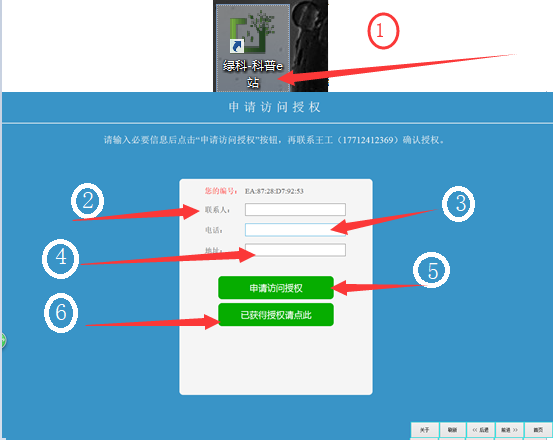

<!DOCTYPE html>
<html>
<head><meta name="generator" content="Hexo 3.8.0">
  <meta charset="utf-8">
  

  
  <title>科普e站电脑版（班班通）安装简要说明 | Hexo</title>
  <meta name="viewport" content="width=device-width, initial-scale=1, maximum-scale=1">
  <meta name="description" content="返回首页   一、依赖环境包安装：adobe flash player，.net framework, 3.5版本以上。二、浏览器必须是IE11。IE升级方法详见WIN7下IE8升级IE11操作说明三、将kpzg.agri114.cn加入受信任站点,请按照以下顺序提示操作。 四、设置受信任站点的自定义级别,请按照以下顺序提示操作。 五、设置高级选项卡,请按照以下顺序提示操作。 六、申请访问授权,">
<meta property="og:type" content="article">
<meta property="og:title" content="科普e站电脑版（班班通）安装简要说明">
<meta property="og:url" content="https://github.com/linuxpy/github.io/2019/01/12/科普e站电脑版（班班通）/index.html">
<meta property="og:site_name" content="Hexo">
<meta property="og:description" content="返回首页   一、依赖环境包安装：adobe flash player，.net framework, 3.5版本以上。二、浏览器必须是IE11。IE升级方法详见WIN7下IE8升级IE11操作说明三、将kpzg.agri114.cn加入受信任站点,请按照以下顺序提示操作。 四、设置受信任站点的自定义级别,请按照以下顺序提示操作。 五、设置高级选项卡,请按照以下顺序提示操作。 六、申请访问授权,">
<meta property="og:locale" content="default">
<meta property="og:image" content="https://github.com/linuxpy/github.io/2019/01/12/科普e站电脑版（班班通）/ie02.png">
<meta property="og:image" content="https://github.com/linuxpy/github.io/2019/01/12/科普e站电脑版（班班通）/ie03.png">
<meta property="og:image" content="https://github.com/linuxpy/github.io/2019/01/12/科普e站电脑版（班班通）/ie04.png">
<meta property="og:image" content="https://github.com/linuxpy/github.io/2019/01/12/科普e站电脑版（班班通）/ie05.png">
<meta property="og:image" content="https://github.com/linuxpy/github.io/2019/01/12/科普e站电脑版（班班通）/ie06.png">
<meta property="og:image" content="https://github.com/linuxpy/github.io/2019/01/12/科普e站电脑版（班班通）/ie07.png">
<meta property="og:image" content="https://github.com/linuxpy/github.io/2019/01/12/科普e站电脑版（班班通）/ie08.png">
<meta property="og:updated_time" content="2019-01-14T13:05:03.491Z">
<meta name="twitter:card" content="summary">
<meta name="twitter:title" content="科普e站电脑版（班班通）安装简要说明">
<meta name="twitter:description" content="返回首页   一、依赖环境包安装：adobe flash player，.net framework, 3.5版本以上。二、浏览器必须是IE11。IE升级方法详见WIN7下IE8升级IE11操作说明三、将kpzg.agri114.cn加入受信任站点,请按照以下顺序提示操作。 四、设置受信任站点的自定义级别,请按照以下顺序提示操作。 五、设置高级选项卡,请按照以下顺序提示操作。 六、申请访问授权,">
<meta name="twitter:image" content="https://github.com/linuxpy/github.io/2019/01/12/科普e站电脑版（班班通）/ie02.png">
  
    <link rel="alternate" href="/github.io/atom.xml" title="Hexo" type="application/atom+xml">
  
  
    <link rel="icon" href="/favicon.png">
  
  
    <link href="//fonts.googleapis.com/css?family=Source+Code+Pro" rel="stylesheet" type="text/css">
  
  <link rel="stylesheet" href="/github.io/css/style.css">
</head>
</html>
<body>
  <div id="container">
    <div id="wrap">
      <header id="header">
  <div id="banner"></div>
  <div id="header-outer" class="outer">
    <div id="header-title" class="inner">
      <h1 id="logo-wrap">
        <a href="/github.io/" id="logo">Hexo</a>
      </h1>
      
    </div>
    <div id="header-inner" class="inner">
      <nav id="main-nav">
        <a id="main-nav-toggle" class="nav-icon"></a>
        
          <a class="main-nav-link" href="/github.io/">Home</a>
        
          <a class="main-nav-link" href="/github.io/archives">Archives</a>
        
      </nav>
      <nav id="sub-nav">
        
          <a id="nav-rss-link" class="nav-icon" href="/github.io/atom.xml" title="RSS Feed"></a>
        
        <a id="nav-search-btn" class="nav-icon" title="Search"></a>
      </nav>
      <div id="search-form-wrap">
        <form action="//google.com/search" method="get" accept-charset="UTF-8" class="search-form"><input type="search" name="q" class="search-form-input" placeholder="Search"><button type="submit" class="search-form-submit">&#xF002;</button><input type="hidden" name="sitesearch" value="https://github.com/linuxpy/github.io"></form>
      </div>
    </div>
  </div>
</header>
      <div class="outer">
        <section id="main"><article id="post-科普e站电脑版（班班通）" class="article article-type-post" itemscope="" itemprop="blogPost">
  <div class="article-meta">
    <a href="/github.io/2019/01/12/科普e站电脑版（班班通）/" class="article-date">
  <time datetime="2019-01-12T09:22:37.000Z" itemprop="datePublished">2019-01-12</time>
</a>
    
  </div>
  <div class="article-inner">
    
    
      <header class="article-header">
        
  
    <h1 class="article-title" itemprop="name">
      科普e站电脑版（班班通）安装简要说明
    </h1>
  

      </header>
    
    <div class="article-entry" itemprop="articleBody">
      
        <blockquote>
<p><a href="https://linuxpy.github.io/github.io/2019/01/12/%E7%A7%91%E6%99%AEe%E7%AB%99%E4%BB%8B%E7%BB%8D%E7%9B%AE%E5%BD%95/" target="_blank" rel="noopener">返回首页</a></p>
</blockquote>
<hr>
<h2 id="一、依赖环境包安装：adobe-flash-player，-net-framework-3-5版本以上。"><a href="#一、依赖环境包安装：adobe-flash-player，-net-framework-3-5版本以上。" class="headerlink" title="一、依赖环境包安装：adobe flash player，.net framework, 3.5版本以上。"></a>一、依赖环境包安装：adobe flash player，.net framework, 3.5版本以上。</h2><h2 id="二、浏览器必须是IE11。"><a href="#二、浏览器必须是IE11。" class="headerlink" title="二、浏览器必须是IE11。"></a>二、浏览器必须是IE11。</h2><h2 id="IE升级方法详见WIN7下IE8升级IE11操作说明"><a href="#IE升级方法详见WIN7下IE8升级IE11操作说明" class="headerlink" title="IE升级方法详见WIN7下IE8升级IE11操作说明"></a>IE升级方法详见<a href="https://wenku.baidu.com/view/03640876ce84b9d528ea81c758f5f61fb73628eb.html" target="_blank" rel="noopener">WIN7下IE8升级IE11操作说明</a></h2><h2 id="三、将kpzg-agri114-cn加入受信任站点-请按照以下顺序提示操作。"><a href="#三、将kpzg-agri114-cn加入受信任站点-请按照以下顺序提示操作。" class="headerlink" title="三、将kpzg.agri114.cn加入受信任站点,请按照以下顺序提示操作。"></a>三、将kpzg.agri114.cn加入受信任站点,请按照以下顺序提示操作。</h2><p><br></p>
<h2 id="四、设置受信任站点的自定义级别-请按照以下顺序提示操作。"><a href="#四、设置受信任站点的自定义级别-请按照以下顺序提示操作。" class="headerlink" title="四、设置受信任站点的自定义级别,请按照以下顺序提示操作。"></a>四、设置受信任站点的自定义级别,请按照以下顺序提示操作。</h2><p><br><br></p>
<h2 id="五、设置高级选项卡-请按照以下顺序提示操作。"><a href="#五、设置高级选项卡-请按照以下顺序提示操作。" class="headerlink" title="五、设置高级选项卡,请按照以下顺序提示操作。"></a>五、设置高级选项卡,请按照以下顺序提示操作。</h2><p></p>
<h2 id="六、申请访问授权-按照以下顺序提示操作-先点击⑤，得到授权后，再点击⑥，见下图。"><a href="#六、申请访问授权-按照以下顺序提示操作-先点击⑤，得到授权后，再点击⑥，见下图。" class="headerlink" title="六、申请访问授权,按照以下顺序提示操作,先点击⑤，得到授权后，再点击⑥，见下图。"></a>六、申请访问授权,按照以下顺序提示操作,先点击⑤，得到授权后，再点击⑥，见下图。</h2><h2 id=""><a href="#" class="headerlink" title=""></a></h2><blockquote>
<p><a href="https://linuxpy.github.io/github.io/2019/01/12/%E7%A7%91%E6%99%AEe%E7%AB%99%E4%BB%8B%E7%BB%8D%E7%9B%AE%E5%BD%95/" target="_blank" rel="noopener">返回首页</a></p>
</blockquote>

      
    </div>
    <footer class="article-footer">
      <a data-url="https://github.com/linuxpy/github.io/2019/01/12/科普e站电脑版（班班通）/" data-id="cjqwgw7f90007d8nqjhqy8hdm" class="article-share-link">Share</a>
      
      
    </footer>
  </div>
  
    
<nav id="article-nav">
  
    <a href="/github.io/2019/01/12/科普e站介绍目录/" id="article-nav-newer" class="article-nav-link-wrap">
      <strong class="article-nav-caption">Newer</strong>
      <div class="article-nav-title">
        
          科普e站介绍目录
        
      </div>
    </a>
  
  
    <a href="/github.io/2019/01/11/科普e站后台发布简要说明/" id="article-nav-older" class="article-nav-link-wrap">
      <strong class="article-nav-caption">Older</strong>
      <div class="article-nav-title">科普e站后台发布简要说明</div>
    </a>
  
</nav>

  
</article>

</section>
        
          <aside id="sidebar">
  
    

  
    

  
    
  
    
  <div class="widget-wrap">
    <h3 class="widget-title">Archives</h3>
    <div class="widget">
      <ul class="archive-list"><li class="archive-list-item"><a class="archive-list-link" href="/github.io/archives/2019/01/">January 2019</a></li></ul>
    </div>
  </div>


  
    
  <div class="widget-wrap">
    <h3 class="widget-title">Recent Posts</h3>
    <div class="widget">
      <ul>
        
          <li>
            <a href="/github.io/2019/01/12/科普e站设备安装使用操作说明/">(no title)</a>
          </li>
        
          <li>
            <a href="/github.io/2019/01/12/hello-world/">Hello World</a>
          </li>
        
          <li>
            <a href="/github.io/2019/01/12/科普e站介绍目录/">科普e站介绍目录</a>
          </li>
        
          <li>
            <a href="/github.io/2019/01/12/科普e站电脑版（班班通）/">科普e站电脑版（班班通）安装简要说明</a>
          </li>
        
          <li>
            <a href="/github.io/2019/01/11/科普e站后台发布简要说明/">科普e站后台发布简要说明</a>
          </li>
        
      </ul>
    </div>
  </div>

  
</aside>
        
      </div>
      <footer id="footer">
  
  <div class="outer">
    <div id="footer-info" class="inner">
      &copy; 2019 John Doe<br>
      Powered by <a href="http://hexo.io/" target="_blank">Hexo</a>
    </div>
  </div>
</footer>
    </div>
    <nav id="mobile-nav">
  
    <a href="/github.io/" class="mobile-nav-link">Home</a>
  
    <a href="/github.io/archives" class="mobile-nav-link">Archives</a>
  
</nav>
    

<script src="//ajax.googleapis.com/ajax/libs/jquery/2.0.3/jquery.min.js"></script>


  <link rel="stylesheet" href="/github.io/fancybox/jquery.fancybox.css">
  <script src="/github.io/fancybox/jquery.fancybox.pack.js"></script>


<script src="/github.io/js/script.js"></script>


  </div>
</body>
</html>